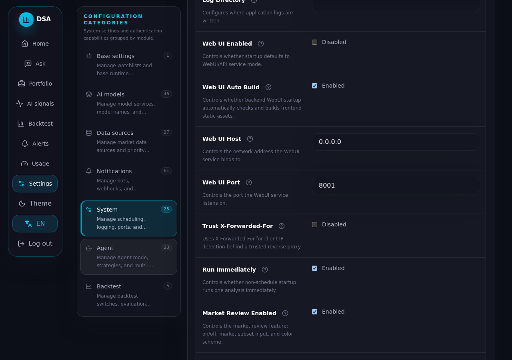

en-02 Settings → System → Authentication & sign-in protection card. Badge reads Enabled; current-password field rendered.

en-03 Uncheck Enable, leave current password blank, click Disable authentication: inline error "… must enter current admin password before disabling authentication"